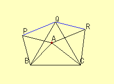

Congruent Triangles(1)
Problem
Triangle ABP, BCQ, CAR are equilateral triangles.
(1) Prove that ABC and PBQ are congruent.
(2) Prove that ARQP is a parallelogram.

Applet
How to use the applet.
This applet will help you to find congruent triangles.
Drag point A, and set the location of A. Then press "Define point A" button.
Choose the center of rotation from A, B, and C.
Drag red points. The triangle ABC will rotate around the center point.
Drag the red point.